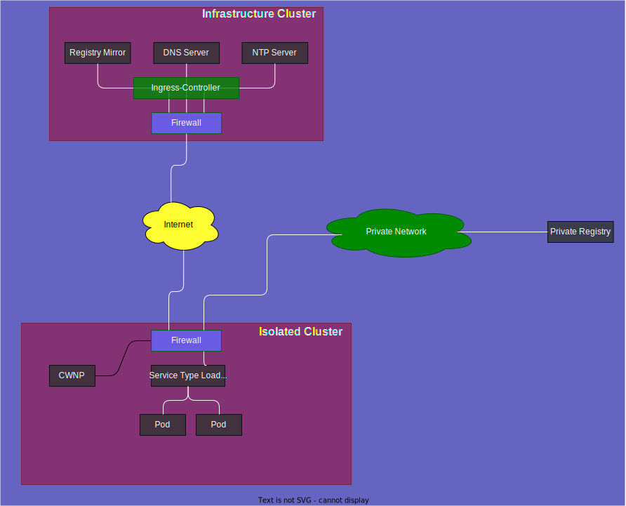

Isolated Kubernetes Clusters
Some Customers have the need to run their workloads in a very restricted environment. These restrictions are driven by regulatory requirements in some industries such as finance, healthcare, energy and more. The Regulatory requirements often define that the workload must not be exposed to the public internet, nor is capable to reach the public internet in any case.
For this purpose we implemented a possibility to start kubernetes clusters in such a manner. This is called isolated cluster.
Network Design
In order to be able to restrict ingress and egress internet traffic, but still make it possible to create a working kubernetes cluster we implemented the following network design.
- All strictly required container images are mirrored to a registry which is only accessible from the kubernetes clusters.
- DNS and NTP Servers are produced alongside the registry.
- The containerd configuration on every worker node is configured to pull all of the strictly required container images from this private registry mirror,
- DNS and NTP configuration is also adopted to use the DNS and NTP Servers on this private environment.
- A list of networks which are allowed to reach is managed, this list reflects the network of the cloud provider and is not modifiable by the cluster user.

It is required to attach a additional network to the kubernetes cluster in order to be able to pull container images for the application workloads from private registries.
Strictly required Container Images
In general the creation of a kubernetes cluster requires the ability to pull container images for several applications which are necessary to make a machine a functional worker node. To mention a few:
- Kubelet: the main controller on each worker node to manage the workload
- CNI (Container Network Interface): controller and daemon set to setup and run the container networking
- CSI (Container Storage Interface): controller and daemon set to setup and run the container storage
- CoreDNS: DNS for containers
- MetalLB: Service Type Loadbalancer Implementation
- Node-Exporter and Metrics-Exporter: Monitoring for the worker node
- Metal-Stack Addons: for firewall and auditing events
Because we configured containerd as such, that all images which are required are pulled from the private registry, it is not possible anymore to pull container images which are located at docker.io or quay.io for example, because all requests to these registries will be redirected to the registry mirror which only contains the images we mirror.
For application workloads please see below how these images must be provided.
Flavors
The way kubernetes clusters can be created changed in this perspective. There are three different flavors of kubernetes cluster: Internet Access Baseline, Restricted and Forbidden. This results in the following restrictions:
Internet Access Baseline
This is the default configuration of a kubernetes cluster, egress traffic is controlled by multiple CWNP's (Cluster Wide Network Policy), ingress traffic is possible by deploying a Service Type Loadbalancer. The cluster user can add additional CWNP's without any restrictions and is responsible for them.
Container images can be pulled from any reachable container registry.
DNS and NTP are configured to internet DNS Resolvers and NTP Servers
The list of CWNP's which are deployed by default are:
> kubectl get clusterwidenetworkpolicies.metal-stack.io
NAME STATUS MESSAGE
allow-to-http deployed
allow-to-https deployed
allow-to-apiserver deployed
allow-to-dns deployed
allow-to-ntp deployed
allow-to-registry deployed
allow-to-storage deployed
allow-to-vpn deployedThe purposes of this CWNPs are:
| Rule Name | |Destination | Purpose | |––––––––––|-|––––––––––––––––––––––––––-|–––––––––––––––––––––––––––––––––––––––––––––––| | allow-to-apiserver | |IP of the Kubernetes API Server on the control plane | API Server communication of kubelet and other controllers | | allow-to-dns | |IP of the private DNS Server | DNS resolution from the Kubernetes worker nodes and containers | | allow-to-ntp | |IP of the private NTP Server | Time synchronization | | allow-to-registry | |IP of the private Registry Mirror | Pulling strictly required container images | | allow-to-storage | |network of the container storage | persistent volumes with the cni driver | | allow-to-vpn | |IP of the vpn endpoint on the control plane | allow communication from the api server to the kubelet for container logs and container exec |
All of these CWNPs are managed by the gardener-extension-provider-metal, every manual modification will be reverted immediately.
Internet Access Forbidden
This configuration can only be achieved by creating a new kubernetes cluster, it is not possible to modify a existing cluster (with internet access baseline or restricted) to this configuration. It is also required to specify the most recent version of kubernetes, older versions of kubernetes are not supported.
Every network access modifications triggered by a cluster user, either by adding/modifying CWNPs or adding a Service Type Loadbalancer, is validated against a list of allowed Networks. If the cluster was created with a additional internal network, this network is part of the allowed networks list.
With internet access forbidden the following restrictions apply:
Egress traffic
Is only allowed to the registry and the DNS and NTP servers by default. Additional CWNPs can be added to reach destinations in the internal networks if specified. If a CWNP was created which points to a destination outside of the allowed networks, the CWNP will still be present but will stay in the Status ignored.
> kubectl get clusterwidenetworkpolicies.metal-stack.io
NAME STATUS MESSAGE
allow-to-apiserver deployed
allow-to-dns deployed
allow-to-ntp deployed
allow-to-registry deployed
allow-to-storage deployed
allow-to-vpn deployed
allow-to-google ignored ingress/egress does not match allowed networksAlso a event is created which describes why the CWNP was ignored:
> kubectl get events
5s Warning ForbiddenCIDR clusterwidenetworkpolicy/allow-to-google address:"8.8.8.8/32" is outside of the allowed network range:"10.0.0.0/8,100.64.0.0/10,212.34.83.0/27", ignoringIngress traffic
Is only allowed from the internal networks if specified. To specify the address where the service type loadbalancer is listening to, the cluster user must first select a IP Address from the internal network the cluster was connected to additionally. Then this IP Address must be configured in the service:
apiVersion: v1
kind: Service
spec:
type: LoadBalancer
loadBalancerIP: 10.1.1.1By default, no IP Address will be automatically selected for such clusters and the ip of the service will stay in pending mode until the ip was specified as shown above.
Internet Access Restricted
This configuration can only be achieved by creating a new kubernetes cluster, it is not possible to modify a existing cluster (with internet access baseline or forbidden) to this configuration. It is also required to specify the most recent version of kubernetes, older versions of kubernetes are not supported.
The same default CWNPs are deployed and the container images are pulled from the private registry. Also DNS and NTP are configured to use the private DNS and NTP servers. The only difference to the forbidden mode is that CWNPs and Service Type Loadbalancers can be created without the restriction that only allowed networks are allowed.
Pulling container images is theoretically possible, if a cluster creates a CWNP which allows network access to the registry host of the container image. Most container registries serve the container images from large CDN Networks which have a lot of IP Addresses. Simply adding the IP Address of docker.io is therefore not sufficient.
Application Container Images
In order to deploy application containers into a cluster with Internet Access Forbidden a private registry must be provided located in the list of allowed networks. The DNS name of the registry must resolve in the public DNS Servers. The registry must be secured with a TLS certificate which is also valid with the ca-certificates from the worker node, e.g. vanilla debian ca-certificates.
Implementation
To achieve this functionality modifications has been implemented in various components in metal-stack, this includes:
Gardener Extension Provider Metal
The ControlPlane API is adopted to enable a user to configure a shoot with the internet access type forbidden or restricted. The CloudProfile can now be extended to carry the list of allowed networks, the dns and ntp servers, the registry with the mirrored registries.
ControlPlane:
// ControlPlaneConfig contains configuration settings for the control plane.
type ControlPlaneConfig struct {
metav1.TypeMeta
// NetworkAccessType defines how the cluster can reach external networks.
// +optional
NetworkAccessType *NetworkAccessType
}
type (
// NetworkAccessType defines how a cluster is capable of accessing external networks
NetworkAccessType string
)
const (
// NetworkAccessBaseline allows the cluster to access external networks in a baseline manner
NetworkAccessBaseline = NetworkAccessType("baseline")
// NetworkAccessRestricted access to external networks is by default restricted to registries, dns and ntp to partition only destinations.
// Therefore registries, dns and ntp destinations must be specified in the cloud-profile accordingly-
// If this is not the case, restricting the access must not be possible.
// Image overrides for all images which are required to create such a shoot, must be specified. No other images are provided in the given registry.
// customers can define own rules to access external networks as in the baseline.
// Service type loadbalancers are also not restricted.
NetworkAccessRestricted = NetworkAccessType("restricted")
// NetworkAccessForbidden in this configuration a customer can no longer create rules to access external networks.
// which are outside of a given list of allowed networks. This is enforced by the firewall.
// Service type loadbalancers are also not possible to open a service ip which is not in the list of allowed networks.
// This is also enforced by the firewall.
NetworkAccessForbidden = NetworkAccessType("forbidden")
)CloudProfile:
type NetworkIsolation struct {
// AllowedNetworks is a list of networks which are allowed to connect in restricted or forbidden NetworkIsolated clusters.
// if empty all destinations are allowed.
AllowedNetworks AllowedNetworks
// DNSServers
DNSServers []string
// NTPServers
NTPServers []string
// The registry which serves the images required to create a shoot.
RegistryMirrors []RegistryMirror
}
// AllowedNetworks is a list of networks which are allowed to connect in restricted or forbidden NetworkIsolated clusters.
type AllowedNetworks struct {
// Ingress defines a list of networks which are allowed for incoming traffic like service type loadbalancer
// to allow all you must specify 0.0.0.0/0 or ::/0
Ingress []string
// Egress defines a list of networks which are allowed for outgoing traffic
// to allow all you must specify 0.0.0.0/0 or ::/0
Egress []string
}
type RegistryMirror struct {
// Name describes this server
Name string
// Endpoint is typically the url of the registry in the form https://hostname
Endpoint string
// IP is the ipv4 or ipv6 address of this server
IP string
// Port at which port the service is reachable
Port int32
// This Registry Mirror mirrors the following registries
MirrorOf []string
}OS Metal Extension
Based on the configuration of a cluster the configuration of the containerd must be changed to pull images from the private registry mirror. If a cluster is either configured with restricted or forbidden, the configuration of containerd will be created as such:
config.toml
imports = ["/etc/containerd/conf.d/*.toml"]
version = 2
[plugins."io.containerd.grpc.v1.cri".registry]
[plugins."io.containerd.grpc.v1.cri".reg
[plugins."io.containerd.grpc.v1.cri".registry.mirrors."docker.io"]
endpoint = ["https://some.private.registry"]
[plugins."io.containerd.grpc.v1.cri".registry.mirrors."quay.io"]
endpoint = ["https://some.private.registry"]
[plugins."io.containerd.grpc.v1.cri".registry.mirrors."docker.lightbitslabs.com"]
endpoint = ["https://some.private.registry"]
[plugins."io.containerd.grpc.v1.cri".registry.mirrors."eu.gcr.io"]
endpoint = ["https://some.private.registry"]
[plugins."io.containerd.grpc.v1.cri".registry.mirrors."ghcr.io"]
endpoint = ["https://some.private.registry"]
[plugins."io.containerd.grpc.v1.cri".registry.mirrors."registry.k8s.io"]
endpoint = ["https://some.private.registry"]
[plugins."io.containerd.grpc.v1.cri".registry.mirrors."r.metal-stack.io"]
endpoint = ["https://some.private.registry"]DNS and NTP must also be adopted according the configuration in the CloudProfile.
Firewall Controller Manager and Firewall Controller
The Firewall Controller Manager changed the FirewallSpec to configure the Firewall Controller which must enforce the restrictions regarding allowed networks.
// FirewallSpec defines parameters for the firewall creation along with configuration for the firewall-controller.
type FirewallSpec struct {
// AllowedNetworks defines which networks are allowed to connect to, and allow incoming traffic from.
// Is only enforced with NetworkAccessForbidden.
// The node network is always allowed.
AllowedNetworks AllowedNetworks `json:"allowedNetworks,omitempty"`
// NetworkAccessType defines how the cluster can reach external networks.
NetworkAccessType NetworkAccessType `json:"networkAccessType,omitempty"`
}
// AllowedNetworks is a list of networks which are allowed to connect when NetworkAccessType is NetworkAccessForbidden.
type AllowedNetworks struct {
// Ingress defines a list of cidrs which are allowed for incoming traffic like service type loadbalancer
Ingress []string `json:"ingress,omitempty"`
// Egress defines a list of cidrs which are allowed for outgoing traffic
Egress []string `json:"egress,omitempty"`
}
type (
// NetworkAccessType defines how a cluster is capable of accessing external networks
NetworkAccessType string
)
const (
// NetworkAccessBaseline allows the cluster to access external networks in a baseline manner
NetworkAccessBaseline = NetworkAccessType("baseline")
// NetworkAccessRestricted access to external networks is by default restricted to registries, dns and ntp to partition only destinations.
// Therefore registries, dns and ntp destinations must be specified in the cloud-profile accordingly-
// If this is not the case, restricting the access must not be possible.
// Image overrides for all images which are required to create such a shoot, must be specified. No other images are provided in the given registry.
// customers can define own rules to access external networks as in the baseline.
// Service type loadbalancers are also not restricted.
NetworkAccessRestricted = NetworkAccessType("restricted")
// NetworkAccessForbidden in this configuration a customer can no longer create rules to access external networks.
// which are outside of a given list of allowed networks. This is enforced by the firewall.
// Service type loadbalancers are also not possible to open a service ip which is not in the list of allowed networks.
// This is also enforced by the firewall.
NetworkAccessForbidden = NetworkAccessType("forbidden")
)Also the ClusterwideNetworkPolicy in the Firewall Controller was changed to show the deployment status of a CWNP.
type ClusterwideNetworkPolicy struct {
metav1.TypeMeta `json:",inline"`
metav1.ObjectMeta `json:"metadata,omitempty"`
Spec PolicySpec `json:"spec,omitempty"`
Status PolicyStatus `json:"status,omitempty"`
}
// PolicyDeploymentState describes the state of a CWNP deployment
type PolicyDeploymentState string
const (
// PolicyDeploymentStateDeployed the CWNP was deployed to a native nftable rule
PolicyDeploymentStateDeployed = PolicyDeploymentState("deployed")
// PolicyDeploymentStateIgnored the CWNP was not deployed to a native nftable rule because it is outside of allowed networks
PolicyDeploymentStateIgnored = PolicyDeploymentState("ignored")
)
// PolicyStatus defines the observed state for CWNP resource
type PolicyStatus struct {
// FQDNState stores mapping from FQDN rules to nftables sets used for a firewall rule.
// Key is either MatchName or MatchPattern
// +optional
FQDNState FQDNState `json:"fqdn_state,omitempty"`
// State of the CWNP, can be either deployed or ignored
State PolicyDeploymentState `json:"state"`
// Message describe why the state changed
Message string `json:"message,omitempty"`
}Cloud Controller Manager
This component was adopted to allow to be started without a default network specified. This was actually always the internet network and if no ip address was specified in the Service Type Loadbalancer, one ip was allocated from this default network. For restricted and isolated clusters this is not provided and a cluster user must always specify this ip to get a working loadbalancer.
OCI Mirror
The OCI Mirror is a new application which acts as a scheduled job which pulls a given list of container images and pushes them to a private registry. The detailed description can be read on the project website.